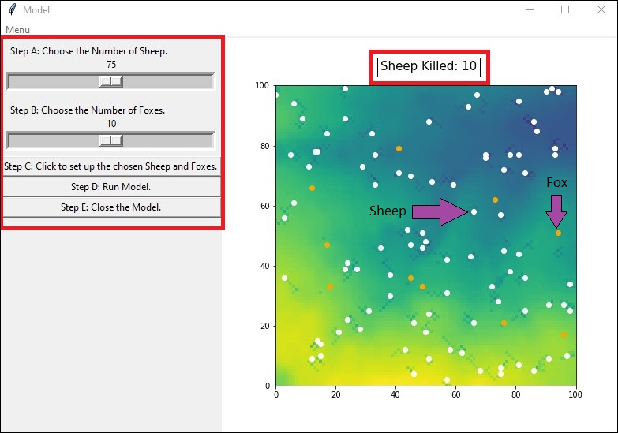
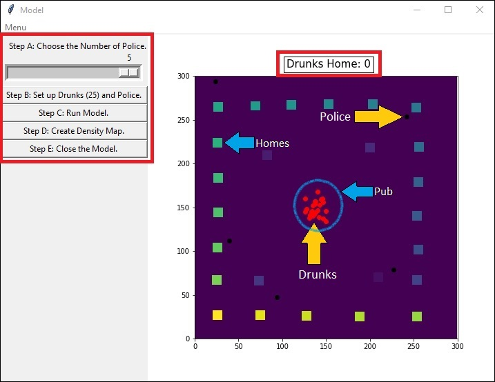

Agent Based Modelling in Python
These are a couple of Agent Based Models that I developed last year to try and simulate real world scenarios. I tried to use just core python for the models themselves then I developed a GUI so users could edit and view the simulations.
#1. Sheeps and Foxes

View GitHub Code HereThe first model is a classic ecology example. The user can select the number of sheep and the number of "foxes". The model runs for a set number of iterations. The sheep are trying to eat grass in their environment and share it with others, while the foxes are trying to eat the sheep. Whoever is left standing in the end is the victor!
#2. Drunks in The Street

This model is very similiar in concept, except it takes more of a human perspective. There are drunks and they each have an assined house they need to return to. But, There are also police that if they catch the drunks will remove them from the model. The drunks will move around randomly until they reach their homes. The added complexity comes from the fact that while the drunks are moving around a sperate densit map is being generated. By the end of the model the map can be displayed, so you can see how popular certain routes were.

Stuart Ross
A Data Science Intern at Leeds Institute of Data Analytics. This was completed as part of my Msc degree and expanded upon as a learning oppertunity... and honestly just for a bit of fun too.